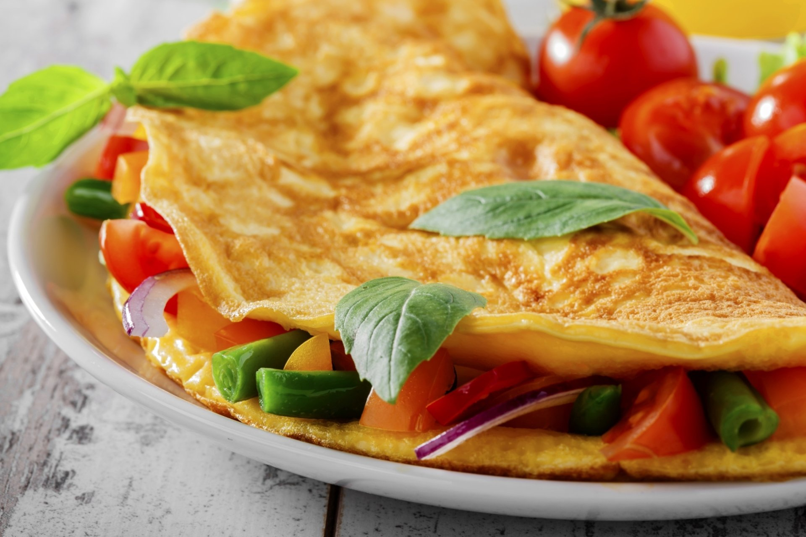

Simple Omlete Reciepe
An easy and quick dish, perfect for any meal. This classic omelette combines beaten eggs cooked to perfection, optionally filled with your choice of cheese, vegetables, or meats.
Preparation time
- Total: Approximately 10 minutes
- Preparation: 5 minutes
- Cooking: 5 minutes
Ingredients
- 2-3 large eggs
- Salt, to taste/
- Pepper, to taste
- 1 tablespoon of butter or oil
- Optional fillings: cheese, diced vegetables, cooked meats, herbs
Instructions
- Beat the eggs: In a bowl, beat the eggs with a pinch of salt and pepper until they are well mixed. You can add a tablespoon of water or milk for a fluffier texture.
- Heat the pan: Place a non-stick frying pan over medium heat and add butter or oil.
- Cook the omelette: Once the butter is melted and bubbling, pour in the eggs. Tilt the pan to ensure the eggs evenly coat the surface.
- Add fillings (optional): When the eggs begin to set at the edges but are still slightly runny in the middle, sprinkle your chosen fillings over one half of the omelette.
- Fold and serve: As the omelette continues to cook, carefully lift one edge and fold it over the fillings. Let it cook for another minute, then slide it onto a plate.
- Enjoy: Serve hot, with additional salt and pepper if needed.
Nutrition
The table below shows nutritional values per serving without the additional fillings.
| Calories | 277kcal |
|---|---|
| Carbs | 0g |
| Protein | 20g |
| Fat | 22g |
Challenge by Frontend Mentor.
Coded by Khushi.